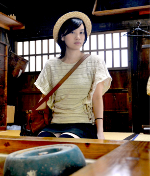

Composer/佐間野絢香

幼少期より、ピアノを筆頭にクラシックバレエ等を習いながら、音楽が好きな母の影響を多大に受けて育つ。
11歳で作曲に興味を持ち、鍵盤を用いて曲を作り始め、14歳ではシンセサイザーとしてオリジナルバンドに加入。
17歳には、携帯電話のシーケンサーを使った作曲スタイルへ移行し、本格的にDTMでの作曲を開始。
自身の好きなアニメソングやゲームミュージックのコピーをしながら、独自で技術や知識を学ぶ。
2010年、役者として所属する「劇団まいほーむ」で主題歌とBGM作成を担当。
EDに起用された「I's」は特に人気を集め、今なお奏者やアレンジを変えながらファンに好まれる一曲となった。
これをきっかけに、同時期ボーカルとして所属していたアニメソングコピーバンドがオリジナルバンド「Night Holic Rabbit*2」として活動を開始。
自身がメインボーカル、Gtと共に作曲も担当し、ライブを精力的に行う傍ら、自主制作のCDは再販を繰り返すなど盛況を極め、他のアニメソングバンド等にもサポートボーカルとして参加。
2014年に行われた、アイドルマスタートリビュートバンド「320production」の出演する「アイドル大戦争」では観客動員が100名を超え超満員という世界を体験し、作曲者兼ボーカリストとして自身の音楽活動を確立させていく。
同年、Night Holic Rabbit*2が解散。
その後、東京で活動する劇団「虹創旅団」へのオリジナル楽曲提供を開始。
数々の主題歌・挿入歌を東京へと生み出しながら、新たにオリジナル曲4ピースバンド「an(y)ear」を結成。
以降も主に劇団からの作曲依頼をこなす傍ら、an(y)earでは作曲兼シンセボーカル、その他サポートボーカルとしても様々なバンドで活躍している。
2015年、本格的に個人活動を開始。
インストから自身で歌ったボーカル曲、他の歌手への楽曲提供など作曲に重きを置きながらも幅広い音楽活動を行っている。